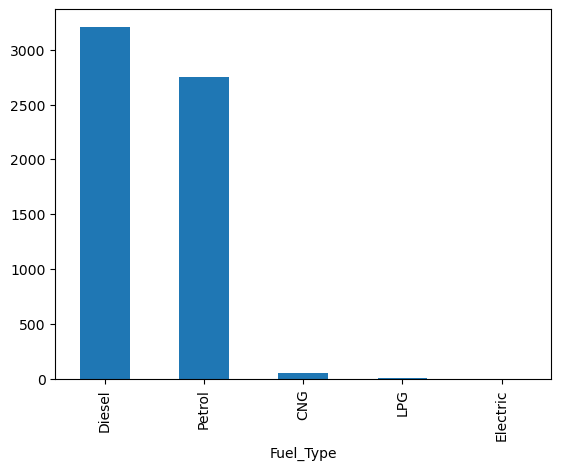

import pandas as pd4 CD: Visualização
5 Introdução
Como apresentado na última aula, estamos agora aprendendo a realizar um “projeto de Ciência de Dados”. Nesta aula, veremos o processo de vizualização de um dados.
5.1 Visualização de Dados

Aqui, serei preguiçoso, o texto do Hadley Wickham é muito bom:
Visualisation is a fundamentally human activity. A good visualisation will show you things that you did not expect, or raise new questions about the data. A good visualisation might also hint that you’re asking the wrong question, or you need to collect different data. Visualisations can surprise you, but don’t scale particularly well because they require a human to interpret them.
Basicamento nosso objetivo aqui é olhar para um data frame e entender quais informações queremos tirar dele e como fazer isso, para depois podermos modelar esses dados.
O caminho é o seguinte:
- Na aula 4, aprendemos as etapas de tidy e transform.
- Nesta aula, aprenderemos a etapa visualize.
- Na aula 6, aprenderemos a etapa model.
- Por fim, na aula 7, juntaremos tudo, aprendendo como fazer um projeto completo. Adicionalmente, aprenderemos como organizar um script para tal.
5.1.1 Índice
- Vizualização de estatísticas descritivas de diferentes dados
- Elementos de um gráfico
- Como fazer gráficos com matplotlib
- Recapitulando
- Extras
- Outros
5.2 Sumarização com Pandas
Uma maneira de visualizar dados é criar resumos, calcular estatísticas descritivas que contem informações chave sobre os dados, de maneira concisa.
Estes links tem alguns tutoriais interessantes:
- https://pandas.pydata.org/docs/getting_started/intro_tutorials/06_calculate_statistics.html
- https://www.geeksforgeeks.org/pandas-groupby-summarising-aggregating-and-grouping-data-in-python/
Vamos começar carregando dados:
df = pd.read_csv("https://drive.google.com/uc?id=1u2MEH_DTBMyG3clVKA4Q5FEpntLZNKeE")
df = df.drop(df.columns[0], axis=1)
df['Engine'] = pd.to_numeric(df['Engine'].str.replace(' CC', ''), errors='coerce')
df['Power'] = pd.to_numeric(df['Power'].str.replace(' bhp', ''), errors='coerce')
df = df.drop(df["Kilometers_Driven"].idxmax())
df| Name | Location | Year | Kilometers_Driven | Fuel_Type | Transmission | Owner_Type | Mileage | Engine | Power | Seats | New_Price | Price | |
|---|---|---|---|---|---|---|---|---|---|---|---|---|---|
| 0 | Maruti Wagon R LXI CNG | Mumbai | 2010 | 72000 | CNG | Manual | First | 26.6 km/kg | 998.0 | 58.16 | 5.0 | NaN | 1.75 |
| 1 | Hyundai Creta 1.6 CRDi SX Option | Pune | 2015 | 41000 | Diesel | Manual | First | 19.67 kmpl | 1582.0 | 126.20 | 5.0 | NaN | 12.50 |
| 2 | Honda Jazz V | Chennai | 2011 | 46000 | Petrol | Manual | First | 18.2 kmpl | 1199.0 | 88.70 | 5.0 | 8.61 Lakh | 4.50 |
| 3 | Maruti Ertiga VDI | Chennai | 2012 | 87000 | Diesel | Manual | First | 20.77 kmpl | 1248.0 | 88.76 | 7.0 | NaN | 6.00 |
| 4 | Audi A4 New 2.0 TDI Multitronic | Coimbatore | 2013 | 40670 | Diesel | Automatic | Second | 15.2 kmpl | 1968.0 | 140.80 | 5.0 | NaN | 17.74 |
| ... | ... | ... | ... | ... | ... | ... | ... | ... | ... | ... | ... | ... | ... |
| 6014 | Maruti Swift VDI | Delhi | 2014 | 27365 | Diesel | Manual | First | 28.4 kmpl | 1248.0 | 74.00 | 5.0 | 7.88 Lakh | 4.75 |
| 6015 | Hyundai Xcent 1.1 CRDi S | Jaipur | 2015 | 100000 | Diesel | Manual | First | 24.4 kmpl | 1120.0 | 71.00 | 5.0 | NaN | 4.00 |
| 6016 | Mahindra Xylo D4 BSIV | Jaipur | 2012 | 55000 | Diesel | Manual | Second | 14.0 kmpl | 2498.0 | 112.00 | 8.0 | NaN | 2.90 |
| 6017 | Maruti Wagon R VXI | Kolkata | 2013 | 46000 | Petrol | Manual | First | 18.9 kmpl | 998.0 | 67.10 | 5.0 | NaN | 2.65 |
| 6018 | Chevrolet Beat Diesel | Hyderabad | 2011 | 47000 | Diesel | Manual | First | 25.44 kmpl | 936.0 | 57.60 | 5.0 | NaN | 2.50 |
6018 rows × 13 columns
5.2.1 Sumarisando o dataframe como um todo
Existem algumas funções que combinam várias informações sobre todas as variáveis ao mesmo tempo.
df.info()<class 'pandas.core.frame.DataFrame'>
RangeIndex: 6019 entries, 0 to 6018
Data columns (total 13 columns):
# Column Non-Null Count Dtype
--- ------ -------------- -----
0 Name 6019 non-null object
1 Location 6019 non-null object
2 Year 6019 non-null int64
3 Kilometers_Driven 6019 non-null int64
4 Fuel_Type 6019 non-null object
5 Transmission 6019 non-null object
6 Owner_Type 6019 non-null object
7 Mileage 6017 non-null object
8 Engine 5983 non-null float64
9 Power 5876 non-null float64
10 Seats 5977 non-null float64
11 New_Price 824 non-null object
12 Price 6019 non-null float64
dtypes: float64(4), int64(2), object(7)
memory usage: 611.4+ KBdf.describe().round(3)| Year | Kilometers_Driven | Engine | Power | Seats | Price | |
|---|---|---|---|---|---|---|
| count | 6019.000 | 6019.000 | 5983.000 | 5876.000 | 5977.000 | 6019.000 |
| mean | 2013.358 | 58738.380 | 1621.276 | 113.253 | 5.279 | 9.479 |
| std | 3.270 | 91268.843 | 601.355 | 53.875 | 0.809 | 11.188 |
| min | 1998.000 | 171.000 | 72.000 | 34.200 | 0.000 | 0.440 |
| 25% | 2011.000 | 34000.000 | 1198.000 | 75.000 | 5.000 | 3.500 |
| 50% | 2014.000 | 53000.000 | 1493.000 | 97.700 | 5.000 | 5.640 |
| 75% | 2016.000 | 73000.000 | 1984.000 | 138.100 | 5.000 | 9.950 |
| max | 2019.000 | 6500000.000 | 5998.000 | 560.000 | 10.000 | 160.000 |
5.2.2 Sumarisando variáveis categóricas
Para variáveis categóricas sem uma ordem intrínseca, podemos ver a frequência absoluta e relativa de cada categoria.
Exemplo: gênero, estado civil e tipo de produto.
#Frequência abusoluta
counts1 = df['Fuel_Type'].value_counts()
print(counts1)
counts1.plot(kind = "bar")Fuel_Type
Diesel 3205
Petrol 2746
CNG 56
LPG 10
Electric 2
Name: count, dtype: int64
#Frequência relativa
counts2 = df['Owner_Type'].value_counts(normalize = True)
print(counts2)
counts2.plot(kind = "bar")Owner_Type
First 0.818877
Second 0.160851
Third 0.018777
Fourth & Above 0.001496
Name: proportion, dtype: float645.2.3 Sumarisando variáveis contínuas
Para variáveis que podem assumir qualquer valor dentro da reta real, podemos olhar para a média, mediana, SD.
Exemplo: renda, preço e peso.
print(df['Price'].mean()) # Também existe .sum(), .min(), etc.
df['Price'].describe()9.47946835022429count 6019.000000
mean 9.479468
std 11.187917
min 0.440000
25% 3.500000
50% 5.640000
75% 9.950000
max 160.000000
Name: Price, dtype: float64De modo mais geral, mas menos mensurável, podemos olhar para a distribuição da variável como um todo com um histograma, e uma visualização simplificada com boxplots.
Histograma: Gráfico que representa a distribuição de uma variável contínua, dividindo os dados em intervalos (ou “bins”) e exibindo a frequência de valores em cada intervalo. É útil para visualizar a forma, dispersão e tendências dos dados, como assimetria e presença de picos.
ax = df['Engine'].plot.hist(density=True, bins=10, alpha=0.6, label='Histograma')
df['Engine'].plot.density(ax=ax, label='Densidade')Boxplot: Gráfico que resume a distribuição de uma variável através de cinco valores-chave: mínimo, primeiro quartil, mediana, terceiro quartil e máximo. Ele é eficaz para identificar outliers, a dispersão dos dados e diferenças entre distribuições de grupos.
df['Price'].plot.box()5.2.4 Sumarisando variáveis discretas
Para variáveis que podem assumir valores inteiros específicos, olhamos para a média, moda e frequência
Exemplos: número de filhos, número de produtos vendidos, índice de satisfação de 1 a 5
counts = df['Year'].value_counts().sort_index()
counts.plot(kind='bar')print(df['Year'].mean())
print(df['Year'].mode())2013.3575938850117
0 2014
Name: Year, dtype: int64print(df['Seats'].mean())
print(df['Seats'].mode())5.278735151413753
0 5.0
Name: Seats, dtype: float645.2.5 Analisando grupos nos dados
Podemos estar interessado em fazer esses resumos mas utilizando grupos nos dados. Veja este tutorial para mais informações.
#Saber a o preço médio de cada tipo
df.groupby('Transmission')['Price'].mean()Transmission
Automatic 19.817702
Manual 5.332703
Name: Price, dtype: float64#Saber o total de cada tipo
df.groupby('Fuel_Type')['Price'].sum()Fuel_Type
CNG 196.94
Diesel 41154.14
Electric 25.75
LPG 24.87
Petrol 15655.22
Name: Price, dtype: float64df.plot.box(column = 'Price', by = 'Fuel_Type')Price Axes(0.125,0.11;0.775x0.77)
dtype: objectdf.groupby('Fuel_Type').agg({'Price': ['sum', 'mean']})| Price | ||
|---|---|---|
| sum | mean | |
| Fuel_Type | ||
| CNG | 196.94 | 3.516786 |
| Diesel | 41154.14 | 12.840605 |
| Electric | 25.75 | 12.875000 |
| LPG | 24.87 | 2.487000 |
| Petrol | 15655.22 | 5.701100 |
df.groupby('Location').agg({'Price': ['sum', 'mean']})| Price | ||
|---|---|---|
| sum | mean | |
| Location | ||
| Ahmedabad | 1894.44 | 8.457321 |
| Bangalore | 4771.65 | 13.328631 |
| Chennai | 3830.29 | 7.753623 |
| Coimbatore | 9589.75 | 15.078223 |
| Delhi | 5378.08 | 9.707726 |
| Hyderabad | 7254.20 | 9.776550 |
| Jaipur | 2399.21 | 5.809225 |
| Kochi | 7277.65 | 11.179186 |
| Kolkata | 3028.75 | 5.661215 |
| Mumbai | 7449.17 | 9.429329 |
| Pune | 4183.73 | 6.726254 |
5.3 BANHEIRO
5.4 Gráficos com o Matplotlib
5.4.1 Anatomia e Estilo de Programação
O Matplotlib exibe seus dados em Figuras (por exemplo, janelas, widgets Jupyter, etc.), cada uma das quais pode conter um ou mais Eixos, uma área onde pontos podem ser especificados em termos de coordenadas x-y (ou theta-r em um gráfico polar, x-y-z em um gráfico 3D, etc.). A maneira mais simples de criar uma Figura com um Eixo é usando pyplot.subplots.
Alguns links úteis:
- https://matplotlib.org/stable/users/explain/quick_start.html.
- https://matplotlib.org/3.8.3/users/index.html.
- https://matplotlib.org/cheatsheets/_images/cheatsheets-1.png.
- https://matplotlib.org/3.8.3/index.html.
- https://matplotlib.org/3.8.3/api/index.html.
5.4.2 Anatomia de uma figura

5.4.3 Plots
- Conteúdo principal do gráfico, ou seja, os dados que queremos visualizar
- A escolha de gráfico para plotar vai depender do tipo de dado que temos e do que queremos comunicar
Tipos de gráficos: - Bar Plot: comparar categorias diferentes, principalmente com dados categóricos ou discretos. Funciona para mostrar a frequência e contagem dos valores - Scatter Plot: mostrar relação entre duas variáveis contínuas, principalmente para observar padrões, tendências e correlações entre duas variáveis - Line Plot: observar mudanças ao longo do tempo de séries de temporais, principalmente para análises de tendência e sazonalidades - Histograma: visualizar a distribuição de uma variável contínua agrupando dados em intervalos e mostra quantos dados caem em cada intervalo - Boxplot: resumir a distribuição de uma variável e destacar valores atípico, principalmente para comparar a distribuição entre várias categorias - Pie Plot: mostrar proporções ou porcentagem entre categorias - Heatmap: visualizar variáveis categóricas ou contínuas em formato de matriz, usando cores para mostrar intensidade ou frequênciacia
5.4.4 Estéticas
- elementos visuais diretamente ligados aos dados
- ajudam a distinguir e interpretar diferentes partes do gráfico
- propósito de destacar os dados de forma intuitiva
- cor dos pontos ou barras, formato e tamanho dos marcadores e espessura das linhas
5.4.5 Tema
- apresentação geral do gráfico,
- tudo que não está diretamente relacionado aos dados, mas que torna o gráfico mais legível e organizado
- título, rótulos dos eixos, fundo, grid, legenda
5.4.6 O estilo da programação
import matplotlib.pyplot as plt
import numpy as np
x = np.linspace(0, 2, 100) # Sample data.
# Note that even in the OO-style, we use `.pyplot.figure` to create the Figure.
fig, ax = plt.subplots(figsize=(5, 2.7))
ax.plot(x, x, label='linear') # Plot some data on the axes.
ax.plot(x, x**2, label='quadratic') # Plot more data on the axes...
ax.plot(x, x**3, label='cubic') # ... and some more.
ax.set_xlabel('x label') # Add an x-label to the axes.
ax.set_ylabel('y label') # Add a y-label to the axes.
ax.set_title("Simple Plot") # Add a title to the axes.
ax.legend() # Add a legend.
5.4.7 Plots Combinados
# Gerando dados fictícios para os gráficos
x = np.linspace(0, 10, 100)
y1 = np.sin(x)
y2 = np.cos(x)
y3 = np.tan(x)
y4 = np.exp(x / 10)
# Criando uma matriz de 2x2 subgráficos
fig, axes = plt.subplots(2, 2, figsize=(10, 8))
# Primeiro gráfico
axes[0, 0].plot(x, y1, 'r')
axes[0, 0].set_title('Seno')
# Segundo gráfico
axes[0, 1].plot(x, y2, 'b')
axes[0, 1].set_title('Cosseno')
# Terceiro gráfico
axes[1, 0].plot(x, y3, 'g')
axes[1, 0].set_ylim(-10, 10) # Limitando o eixo y para evitar valores muito grandes
axes[1, 0].set_title('Tangente')
# Quarto gráfico
axes[1, 1].plot(x, y4, 'm')
axes[1, 1].set_title('Exponencial')
# Ajustar o layout para evitar sobreposição
plt.tight_layout()
# Exibir o gráfico
plt.show()fig, axs = plt.subplots(2, 2, figsize=(12, 8))
# Histograma da quilometragem
axs[0, 0].hist(df['Kilometers_Driven'], bins=10, color='lightcoral', edgecolor='darkred', alpha=0.7)
axs[0, 0].set_title('Histograma da Quilometragem', fontsize=14, fontweight='bold')
axs[0, 0].set_xlabel('Quilometragem', fontsize=12, color='darkred')
axs[0, 0].set_ylabel('Frequência', fontsize=12, color='darkred')
axs[0, 0].tick_params(axis='both', colors='darkred')
axs[0, 0].grid(color='grey', linestyle='--', linewidth=0.5, alpha=1)
# Gráfico de linhas com soma de vendas
axs[0, 1].plot(
df.groupby("Year")["Price"].sum().index,
df.groupby("Year")["Price"].sum().values,
marker='*', linestyle=':', color='navy', markersize=6, label='Total de Vendas'
)
axs[0, 1].set_title('Soma das Vendas por Ano', fontsize=14, fontweight='bold', fontstyle='italic')
axs[0, 1].set_xlabel('Ano', fontsize=12, color='navy')
axs[0, 1].set_ylabel('Valores', fontsize=12, color='navy')
axs[0, 1].legend(loc='upper left', frameon=False)
axs[0, 1].tick_params(axis='x', colors='darkred', rotation=45)
axs[0, 1].tick_params(axis='y', colors='teal')
axs[0, 1].grid(color='grey', linestyle=':', linewidth=1, alpha=1)
# Scatter plot de Ano vs. Quilometragem
axs[1, 0].scatter(df['Year'], df['Kilometers_Driven'], color='purple', edgecolor='black', s=70, alpha=0.6, marker='v')
axs[1, 0].set_title('Ano vs. Quilometragem', fontsize=14)
axs[1, 0].set_xlabel('Ano', fontsize=12, color='darkgreen')
axs[1, 0].set_ylabel('Quilometragem', fontsize=12, color='purple')
axs[1, 0].tick_params(axis='x', colors='purple', rotation=45)
axs[1, 0].tick_params(axis='y', colors='purple')
axs[1, 0].grid(color='lavender', linestyle=':', linewidth=0.1, alpha=0.5)
# Gráfico de barras da quantidade de tipo de motor
axs[1, 1].bar(df['Fuel_Type'].value_counts().index, df['Fuel_Type'].value_counts().values, color='dodgerblue', edgecolor='black', hatch='/')
axs[1, 1].set_title('Tipo de Motor', fontsize=14, fontweight='bold')
axs[1, 1].set_xlabel('Tipo do motor', fontsize=12, color='dodgerblue')
axs[1, 1].set_ylabel('Quantidade', fontsize=12)
# Ajuste do layout
plt.tight_layout()
plt.show()5.5 Extras
Principais paramêtros:
- color: cor
- linewidth: espessura da linha
- width: largura da barra
- linestyle: tipo de linha
- marker: símbolo nos pontos
- markersize: tamanho do símbolo
- label: legenda da série
- s: tamanho de cada ponto
- alpha: controle de transparência
- edgecolor: cor da borda
- hatch: preencimento da barra
- bins: número de intervalos para os dados
- autopct: formato para exibir os valores percentuais
- strangle: ângulo de rocação inicial do gráfcio
- explode: destaca fatias específicas
- cmap: mapa de cores
- Tipos de Linhas (linestyle)
- ‘-’: Linha contínua (padrão).
- ‘–’: Linha tracejada.
- ‘-.’: Linha traço-ponto.
- ‘:’: Linha pontilhada.
- ’’ ou ‘None’: Sem linha (exibe apenas os marcadores).
- Cores (color)
- Nomes de cores: ‘blue’, ‘red’, ‘green’, ‘purple’, ‘orange’, etc.
- Códigos Hexadecimais: ‘#1f77b4’, ‘#ff7f0e’, etc.
- Mapas de Cores (Colormaps): Paletas usadas para gradientes, como ‘viridis’, ‘plasma’, ‘coolwarm’, etc.
- Marcadores (marker)
- ‘o’: Círculo
- ‘s’: Quadrado
- ‘^’: Triângulo para cima
- ‘v’: Triângulo para baixo
- ‘D’: Losango
- ’*’: Estrela
- ‘+’: Cruz
- ‘x’: X
5.5.1 Outros
Biblioteca seaborn para criar gráficos mais complexos de maneira mais fácil: https://seaborn.pydata.org/
Biblioteca plotline para criar gráfico dinâmica e interativos: https://plotnine.org/
#Gráfico 1
# Criar uma figura com uma grade de 2 linhas e 3 colunas
fig, axs = plt.subplots(2, 3, figsize=(15, 8)) # figsize ajusta o tamanho total da figura
# 1. Gráfico de Barras
categorias = ['A', 'B', 'C', 'D']
vendas = [50, 30, 20, 40]
axs[0, 0].bar(categorias, vendas, color='skyblue', edgecolor='black')
# 2. Gráfico de Dispersão
idades1 = [20, 25, 30, 35, 40]
pesos1 = [65, 70, 75, 80, 85]
idades2 = [22, 27, 32, 37, 42]
pesos2 = [68, 73, 78, 83, 88]
axs[0, 1].scatter(idades1, pesos1, color='purple', edgecolor='black', marker='o', label="Grupo 1")
axs[0, 1].scatter(idades2, pesos2, color='purple', edgecolor='black', marker='o', label="Grupo 2")
# 3. Gráfico de Linhas
dias = ['A', 'B', 'C', 'D', 'E', 'F', 'G']
temperaturas1 = [18, 20, 22, 21, 19, 17, 18]
temperaturas2 = [19, 21, 23, 22, 20, 18, 19]
axs[0, 2].plot(dias, temperaturas1, marker='o', color='orange', linestyle='-', label="Série 1")
axs[0, 2].plot(dias, temperaturas2, marker='o', color='orange', linestyle='-', label="Série 2")
# 4. Histograma
idades_hist = [22, 22, 23, 24, 25, 25, 26, 27, 28, 28, 29, 30, 30, 31, 32, 32, 33, 34]
axs[1, 0].hist(idades_hist, bins=5, color='lightgreen', edgecolor='black')
# 5. Gráfico de Pizza
regioes = ['A', 'B', 'C', 'D']
vendas_pizza = [300, 500, 200, 400]
axs[1, 1].pie(vendas_pizza, labels=regioes, autopct='%1.1f%%', startangle=140,
colors=['#ff9999','#ff9999','#ff9999','#ff9999'])
# 6. Heatmap (Matriz de Correlação)
dados = np.array([[1, 0.8, 0.3],
[0.8, 1, 0.5],
[0.3, 0.5, 1]])
im = axs[1, 2].imshow(dados, cmap='viridis', aspect='auto')
# Ajuste de layout
plt.tight_layout()
# Salvar a figura sem mostrar na tela
#plt.savefig("grafico1.png", dpi=300)
plt.show()
#plt.close()#Gráfico 2
# Criar uma figura com uma grade de 2 linhas e 3 colunas
fig, axs = plt.subplots(2, 3, figsize=(15, 8))
# 1. Gráfico de Barras com cores diferentes para cada barra
categorias = ['A', 'B', 'C', 'D']
vendas = [50, 30, 20, 40]
cores = ['skyblue', 'salmon', 'lightgreen', 'gold']
axs[0, 0].bar(categorias, vendas, color=cores, edgecolor='black')
# 2. Gráfico de Dispersão com dois grupos de dados, cores e formatos diferentes
idades1 = [20, 25, 30, 35, 40]
pesos1 = [65, 70, 75, 80, 85]
idades2 = [22, 27, 32, 37, 42]
pesos2 = [68, 73, 78, 83, 88]
axs[0, 1].scatter(idades1, pesos1, color='purple', edgecolor='black', marker='o', label="Grupo 1")
axs[0, 1].scatter(idades2, pesos2, color='blue', edgecolor='black', marker='s', label="Grupo 2")
# 3. Gráfico de Linhas com duas séries temporais e estilos de linha diferentes
dias = ['A', 'B', 'C', 'D', 'E', 'F', 'G']
temperaturas1 = [18, 20, 22, 21, 19, 17, 18]
temperaturas2 = [19, 21, 23, 22, 20, 18, 19]
axs[0, 2].plot(dias, temperaturas1, marker='o', color='orange', linestyle='-', label="Série 1")
axs[0, 2].plot(dias, temperaturas2, marker='s', color='green', linestyle='--', label="Série 2")
# 4. Histograma com diferentes estilos de borda
idades_hist = [22, 22, 23, 24, 25, 25, 26, 27, 28, 28, 29, 30, 30, 31, 32, 32, 33, 34]
axs[1, 0].hist(idades_hist, bins=5, color='lightgreen', edgecolor='darkgreen', hatch='//')
# 5. Gráfico de Pizza com diferentes ângulos de início e explosão de fatia
regioes = ['A', 'B', 'C', 'D']
vendas_pizza = [300, 500, 200, 400]
explode = (0, 0.1, 0, 0) # Explodindo a segunda fatia
axs[1, 1].pie(vendas_pizza, labels=regioes, autopct='%1.1f%%', startangle=140, explode=explode,
colors=['#ff9999','#66b3ff','#99ff99','#ffcc99'])
# 6. Heatmap (Matriz de Correlação) com rótulos e barra de cor ajustada
dados = np.array([[1, 0.8, 0.3],
[0.8, 1, 0.5],
[0.3, 0.5, 1]])
im = axs[1, 2].imshow(dados, cmap='coolwarm', aspect='auto')
fig.colorbar(im, ax=axs[1, 2], fraction=0.046, pad=0.04)
# Ajuste de layout
# Salvar a figura sem mostrar na tela
#plt.savefig("grafico2.png", dpi=300)
plt.show()
#plt.close()#Gráfico 3
# Criar uma figura com uma grade de 2 linhas e 3 colunas
fig, axs = plt.subplots(2, 3, figsize=(15, 10))
# 1. Gráfico de Barras com cores diferentes para cada barra
categorias = ['A', 'B', 'C', 'D']
vendas = [50, 30, 20, 40]
cores = ['skyblue', 'salmon', 'lightgreen', 'gold']
axs[0, 0].bar(categorias, vendas, color=cores, edgecolor='black')
axs[0, 0].set_title("Vendas por Categoria")
axs[0, 0].set_xlabel("Categorias")
axs[0, 0].set_ylabel("Vendas")
# 2. Gráfico de Dispersão com dois grupos de dados, cores e formatos diferentes
idades1 = [20, 25, 30, 35, 40]
pesos1 = [65, 70, 75, 80, 85]
idades2 = [22, 27, 32, 37, 42]
pesos2 = [68, 73, 78, 83, 88]
axs[0, 1].scatter(idades1, pesos1, color='purple', edgecolor='black', marker='o', label="Homens")
axs[0, 1].scatter(idades2, pesos2, color='blue', edgecolor='black', marker='s', label="Mulheres")
axs[0, 1].set_title("Idade vs Peso")
axs[0, 1].set_xlabel("Idade")
axs[0, 1].set_ylabel("Peso (kg)")
axs[0, 1].legend()
# 3. Gráfico de Linhas com duas séries temporais e estilos de linha diferentes
dias = ['A', 'B', 'C', 'D', 'E', 'F', 'G']
temperaturas1 = [18, 20, 22, 21, 19, 17, 18]
temperaturas2 = [19, 21, 23, 22, 20, 18, 19]
axs[0, 2].plot(dias, temperaturas1, marker='o', color='orange', linestyle='-', label="Série 1")
axs[0, 2].plot(dias, temperaturas2, marker='s', color='green', linestyle='--', label="Série 2")
axs[0, 2].set_title("Temperatura Semanal")
axs[0, 2].set_xlabel("Dias")
axs[0, 2].set_ylabel("Temperatura (°C)")
axs[0, 2].legend()
# 4. Histograma com diferentes estilos de borda
idades_hist = [22, 22, 23, 24, 25, 25, 26, 27, 28, 28, 29, 30, 30, 31, 32, 32, 33, 34]
axs[1, 0].hist(idades_hist, bins=5, color='lightgreen', edgecolor='darkgreen', hatch='//')
axs[1, 0].set_title("Distribuição de Idades")
axs[1, 0].set_xlabel("Idade")
axs[1, 0].set_ylabel("Frequência")
# 5. Gráfico de Pizza com diferentes ângulos de início e explosão de fatia
regioes = ['A', 'B', 'C', 'D']
vendas_pizza = [300, 500, 200, 400]
explode = (0, 0.1, 0, 0) # Explodindo a segunda fatia
axs[1, 1].pie(vendas_pizza, labels=regioes, autopct='%1.1f%%', startangle=140, explode=explode,
colors=['#ff9999','#66b3ff','#99ff99','#ffcc99'])
axs[1, 1].set_title("Vendas por Região")
# 6. Heatmap (Matriz de Correlação) com rótulos e barra de cor ajustada
dados = np.array([[1, 0.8, 0.3],
[0.8, 1, 0.5],
[0.3, 0.5, 1]])
im = axs[1, 2].imshow(dados, cmap='coolwarm', aspect='auto')
axs[1, 2].set_title("Heatmap de Correlação")
axs[1, 2].set_xticks(range(3))
axs[1, 2].set_yticks(range(3))
axs[1, 2].set_xticklabels(['Var1', 'Var2', 'Var3'])
axs[1, 2].set_yticklabels(['Var1', 'Var2', 'Var3'])
fig.colorbar(im, ax=axs[1, 2], fraction=0.046, pad=0.04)
# Ajuste de layout
# Salvar a figura sem mostrar na tela
#plt.savefig("grafico3.png", dpi=300)
plt.show()
#plt.close()